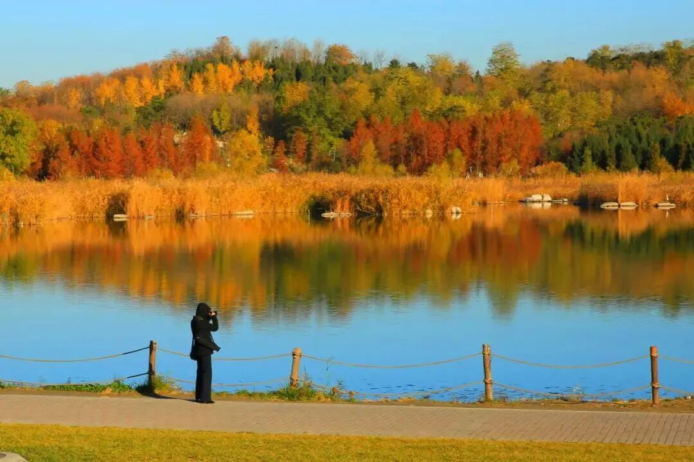
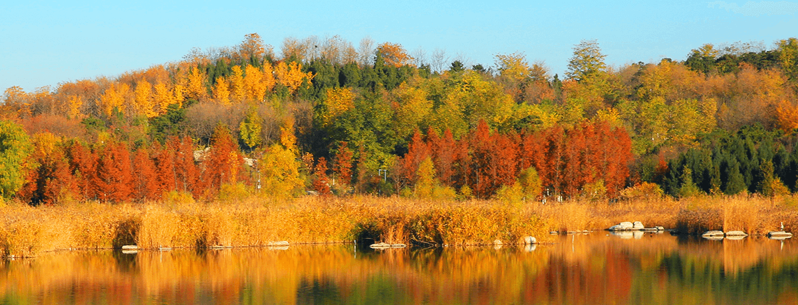
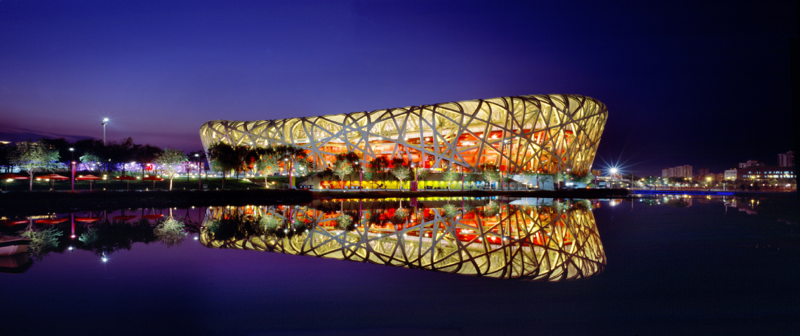

09:00前后
当天安排
奥森是主角，地标随兴致西门银杏 → 湿地 → 可选西坡 → 奥海西岸，原路回西门取车。上午把时间留给秋景；下午两馆只看外观，不安排付费参观。
09:15前后
1西门银杏，先慢慢拍
先在近门的银杏路段走一会儿。用树干与落叶作背景，不急着冲向南门；给这一段留25–35分钟。
怎么走 沿主路向东看银杏，再向东北接湿地外围步道。
怎么拍 一人沿路慢走，另一人退几步拍全身；合照可用定时拍摄。
09:50前后
2湿地：芦苇、水杉与水鸟
这是上午最值得慢下来的地方。沿外围步道看芦苇和水鸟，到叠水花台、沉水廊道附近，再按开放路牌选一小段进去。
怎么走 红线绕湿地西侧、北侧与东侧，结束回南端接点。记住“湿地”和“奥海西岸”两个方向。
怎么拍 芦苇放前景，人物靠画面一侧；拍水鸟远一些，不追赶、不投喂。
11:00前后

3仰山西坡，有兴致再加
天气和体力都舒服，就加一段山坡林路看彩叶与林间层次。只走短支线，不把登顶塞进今天；下雨便跳过，把时间留给湖岸。
怎么走 从湿地东北侧接蓝色支线，走完原路回到红线；蓝线不是登顶轨迹。
怎么拍 把彩叶放近处、人物放路上，拍出前后层次。照片是资料参考，现场叶况为准。
11:30前后

4奥海西岸，把湖水拍进合照
在能看见湖水和远岸树色的位置停一会儿。这里不赶路，坐坐、拍照、看看倒影，把上午的公园散步收成一张开阔的合照。
怎么走 从湿地南端向东南接湖岸短支线。看完原路回接，不沿湖越走越远到南门。
怎么拍 手机横过来，用1倍拍人和湖；风小有倒影时，可把地平线放在画面中间。
12:15前后
P沿来路回西门取车
开始往西门走，给回车、收拾和出库留25分钟左右。今天上午到这里就很完整了，不再跨到北园或追更多景点。
12:40前后
13:15前后
午饭＋咖啡，慢慢坐一会儿
金鼎轩在北辰荟B座3层L320B/L321，可先吃热饭；Grid Coffee在1层L115、南门附近。午餐留到14:15左右，把补水、洗手间与充电一起解决。
15:00前后

B还想看地标，就加一段外观线
午餐后还有兴致、雨不大，再从北辰荟南门步行去水立方和鸟巢。两馆各看20–30分钟；连同往返，约15:00–17:00。只在外侧散步拍照。
17:00前后
时间是建议节奏，可以跟着拍照、体力和雨势调整。景点照片为官网资料图，不代表11月7日实时叶况；鸟巢夜景图也不承诺当天同样亮灯。
午后，按兴致选
两馆只看外观午饭后不用为了凑满一天继续赶路。想看地标走A，想舒服一点就选B；这两种都能完整结束今天。
午饭就在停车的商场里吃
金鼎轩：北辰荟B座3层L320B / L321。官网时段07:30–22:00，电话010-60991925。若等位久，就在同层选热食，不另开车找饭。
Grid Coffee：1层L115，南门附近。可以饭后买一杯，也可以外观散步回来再坐。当天门店营业与等位情况到店前再看。
自驾与出发准备
上午：南园西门停车
导航搜奥林匹克森林公园南园西门停车场，林萃路一侧。从西门进，也从西门出。
官网小型车标准1元/10分钟。按09:00–12:40约3小时40分估算约22元；实际以入口公示、入出场时间计费。
自动保存在当前浏览器，也建议拍照。
导航到西门停车 ↗午后：北辰荟地下车库
北辰西路6号院。中午挪一次车，下午从商场南门步行出发，也回同一商场取车。
费用与消费抵扣看当天公示。鸟巢地下停车场当天关闭。回来走商场步行入口，不走机动车坡道。
两次停车分别保存，不互相覆盖。
导航到北辰荟车库 ↗衣服、雨具与电量
园区散步免费、普通入园无需预约。本次两馆只看外观，预算只计停车与餐饮。
出门前再看一次朝阳区天气及目的停车入口；下午雨大就按Plan B提早收尾。
地图、路线与照片从哪里来
整理与核对日期：2026年11月6日。本页复用真实地图与现成游览资料，再按自驾取车调整；步行时段是建议预留，不是实测到达时间。天气、车位、围挡和场馆当天项目请在出发时再确认。
- 奥森官网｜园区地图、停车与游园服务
本页上午底图来自现行官网；11月6日核对西门停车场、小型车1元/10分钟。 - 北京旅游网／北京朝阳｜银杏、红叶、花海
2026年10月27日的赏秋点位及公园资料照片。叶色与图中喷泉不代表11月7日实况。 - 路蝶_353｜奥森每年去无数回的公园
2023年实地游览经验与秋景点位图。借鉴西门、湿地和奥海西岸的组合；旧停车优惠不沿用。 - Pacer｜奥海3.6公里现成环线
作为另一个成熟路线参考；本页西门赏秋线不是该环线，也不套用它的里程。地图 © Mapbox / © OpenStreetMap contributors。 - 中国网｜奥林匹克中心区全景图
2025年12月刊载。下午叠线表示建筑间的游览走向；准确入口使用高德POI。 - 中国天气网｜11月7日朝阳区预报
11月6日05:30预报：白天小雨、最高6℃；夜间雨夹雪、最低2℃。出门前刷新。 - 鸟巢｜演唱会期间开放调整：11月6–8日有演唱会，地下停车场全天关闭。本次只看外围外观。
- 金鼎轩｜鸟巢北辰荟店
B座3楼L320B/L321，官网时段07:30—22:00，电话010-60991925。 - 高德｜Grid Coffee北辰荟店
1层L115，近北辰荟南门；门店营业以当天为准。 - 国家体育场官网｜鸟巢资料照片
夜景图来自场馆官网，不承诺明天同一亮灯效果。 - 水立方官网｜南广场资料照片
历史建筑外观图，供识别场馆，现场布置可能不同。
上午路线不是Pacer原环线；图中红线包含湖岸短往返，蓝线为山坡可选往返。下午全景图用于判断场馆方位，不按比例；各门与回车导航采用高德地点坐标。封面按你提供的合照将两人与亲密姿势卡通化，背景为奥森、鸟巢、水立方的组合插画。